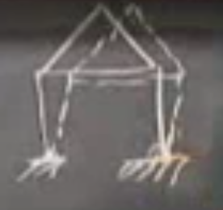

Makaskirişler (Truss)
Bir makaşkiriş esneyebilen çubuklardan (bar) oluşur, bu çubuklar birbirine bağlantı pimleri (pin joint) ile bağlıdır. Bağlantı pimi derken şunu kastediyorum, çubukları esnetmek özellikle uzunluğu yönünde kuvvet gerektirir, ama pim etrafında çubukları döndürmek efor gerektirmez.
Mesela resimdeki 3 no'lu çubuğu sağa ve sola esnetmek zor, ama o çubuğu 3 no'lu pim etrafında döndürmek kolay.
Bu derste iki boyutlu makaşkirişler incelenecek, daha önce iki boyutlu yay-kütle sistemini incelediğimiz gibi; muhakkak üç boyutlu makaşkiriş sistemleri de var ama iki boyut üzerinde ana başlıkları daha rahat olarak inceleyebiliriz.
Üstte görülen örnekte 5 tane çubuk 3 tane düğüm (nod, pim noktası) görüyorum. Peki bilinmeyenler ne? Yani daha önceki yay-kütle problemindeki hesapladığımız $u$ nedir? Çünkü $u$'dan $e$'ye oradan $w$'ya oradan da $f$'ye gitmek istiyorum. İlk geçişi matris $A$ yapar, ikinciyi $C$, üçüncüyü $A^T$.. Bildiğimiz şeyler bunlar ama bu yapıyı önümüzdeki probleme göre oluşturmak gerekiyor. Bahsettiğimiz matrislerin içini doldurmamız gerekiyor.
O zaman yapıyı tarif edelim. Mesela önce 1 no'lu düğüme bakalım, ona etki eden kuvvetler nedir? İk boyuttayız demiştik, o zaman bir yatay bir de dikey kuvvet olacak, en azından o düğüme etki eden tüm kuvvetler bu iki eksen bağlamında incelenebilir. Bilinmeyeni $u$'yu bu fırsatla tanıştırıyorum, alttaki resimde mesela ikinci düğümdeki yer değişimini yatay ve dikey bileşenlerine ayırarak gösterebilirim,

Bileşenler yatay yönde $u_2^H$, dikey yönde $u_2^V$. Bu yer değişimlerini, yatay, dikey her pim için yaparız, böylece, bir anlamda elimizdeki biinmeyen değişken sayısı ikiye katlanmış oldu. Artı, eksi olabilen tek bir $u$ öğesi yerine artık her düğüm için iki tane $u$ öğesi takip etmemiz gerekiyor.
Şimdi alttaki yere bağlı destek noktalarına bakalım; orada ne oluyor? Bu noktalarda ne sağa, ne sola, ne yukarı aşağı hareket var, çünkü oraları sabitlendi. O zaman $u_4^H = u_4^V = 0 = u_5^H = u_5^V = 0$. Toplam kaç tane bilinmeyen var? Altı tane. 1,2,3 düğümleri için ikişer tane, sabitlenmiş noktalarda yok, onlar biliniyor. Demek ki $A$ matrisim 5 x 6 boyutunda olacak. Bu yapı bize 6 tane $u$, 5 tane $e$, 5 tane çubuk kuvveti, ve 6 tane denge denklemi verecetir.
Fakat bu makaşkırışın üstünde durmak güvenli olmayabilir.. Bu püf noktası makaşkırişlere özel olarak devreye giriyor, ve konuyu daha ilginç hale getiriyor. Niye? Pür lineer cebirsel sebeplerle aslında, $A$ matrisi 5 x 6 boyutlarında, yani satırdan fazla kolon var, bu durumda $A u = 0$ denklemini çözen sıfır olmayan bir $u$ var, [1]'deki örnekte olduğu gibi. Bu arada $A$ matrisleri gerçek dünya örneklerinde rahatça satırdan fazla kolona sahip olabilir çünkü düğüm ekledikçe o sayı çarpı iki kadar kolon eklemek lazım, $A$ büyüyecek ve $A$ bağımlı kolonlara sahip olacak. Fiziksel dilde devam edersek sıfır olmayan yer değişimlerinin sıfır esnemeyi ima ettiği durumlar ortaya çıkabilecek.
Makaskiriş üzerinde bu neye benzerdi? Yer değişimi var, ama esneme yok. Alttaki gibi olabilirdi mesela,

Bu harekete tekabül eden $u$'yu hayal etmeye uğraşıyorum şimdi, yine 1, 2, 3 düğümleri aynı yerde olsun, ve ufak bir hareketi bir birimlik değerle temsil edersem (vektör içinde önce yatay sonra dikey değer gelecek şekilde),
$$ u = \left[\begin{array}{r} 1 \\ 0 \\ 1 \\ 0 \\ 1 \\ 0 \end{array}\right] $$
Yani sadece yatay yer değişimi oldu, dikey hiç olmadı. Fakat bazılarımız şimdi diyebilir ki "ama az da olsa dikey bir yer değişimi gözüküyor". Bu doğru, ama unutmayalım her şeye lineer bakıyorum, yaklaşıklama "birinci derece terimle" yapılıyor, o zaman mesela

gibi bir durumda, $\theta$ kadar bir kayma var, çubuğun uzunluğu 1 diyelim, gelinen nokta neresidir? Yatay olarak bu yer değişim $\sin\theta$ kadar, dikey olarak $1-\cos\theta$. Şimdi ufak $\theta$ sözkonusu ise $\sin\theta \approx \theta$. Peki $1-\cos\theta$ yaklaşık olarak nedir? Her iki terim için de açılım yapalım, ve yüksek dereceki terimleri yoksayalım,
$$ \sin\theta = \theta - \frac{\theta^3}{6} ... \approx \theta $$
$$ 1-\cos\theta = 1 - (1-\frac{\theta^2}{2} ... ) = \frac{\theta^2}{2} ... \approx 0 $$
Eğer $\theta^2$ ifadesinin probleme dahil olmasına izin verseydim o zaman gayrı lineer bir problem elde ederdim. Bunu istemiyorum, yaklaşım lineer, o sebeple o terimleri atınca geriye üstteki sonuçlar kalıyor. Zaten gayrı lineerlige çoğunlukla ihtiyaç ta olmayabiliyor. Sonlu öğeler, yapılar, köprüler, alanım, araçlarım her ne ise umudumuz ve beklentimiz hep ufak $\theta$ varlığı ve problemin lineer olması. Ve lineer bir insan için $\theta^2$ sıfırdır. İşte bu sebeple üstteki $u$ içindeki bazı öğeler sıfır.
Devam etmeden ekleyelim, bir probleme gayrı lineerlik bazı durumlarda dahil olabilir; mesela geometrik gayrı lineerlik ile, üstteki problemde eğer $\theta$'ların çok büyük olmasına izin verseydim, o zaman $\theta^2$'i yok sayamazdım. Bu işleri zorlaştırırdı tabii, mesela bazı sonlu öğeler yaklaşımları buna izin verir, Abaqus'ta mesela bu tür hesap şekli desteklenir, o alanda ilk bakılan problemlerden biri Atlantik altındaki kablolara ne olurdu mesela, müthiş ilgi çekici problemler, bir diğeri araba kazası sırasında arabaların dış yapısına ne olur? O anda geometri değişiyor muhakkak, büyük yer değişimleri oluyor.. Bunlar gayrı lineer yaklaşım gerektiriyor.
Bizim problemde her şey lineer. Makaşkirişin çok daha çetrefil olduğu problemler görürünüz belki ileride ama o durumda bile hala lineerlik varsayımı ile hesaplar yapmak mümkündür.
Bir soru daha sorayım; üstteki problemdeki şekil bozulma durumunu, deformasyonu nasıl engellerim? Çünkü eğer azıcık sert bir rüzgar esse bu yapı küt diye aşağı düşecek değil mi? O zaman yapıyı nasıl stabil hala getiririm?
[devam edecek]
Kaynaklar
[1] Bayramli, Hesapsal Bilim, Ders 1-8